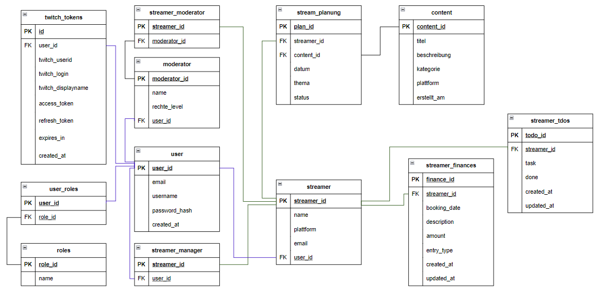

Architektur
Überblick über Aufbau, Zuständigkeiten der Module und das Zusammenspiel von GUI, Datenbank und Twitch-Anbindung.
Architekturüberblick
liveXtrem ist als Desktop-Anwendung in Python umgesetzt und verbindet eine grafische Benutzeroberfläche mit relationaler Datenhaltung und externer Twitch-Integration. Die Anwendung ist nicht als einzelnes, unstrukturiertes Gesamtfenster aufgebaut, sondern in klar abgegrenzte Bereiche unterteilt. Dadurch lassen sich Anmeldung, Rollensteuerung, Dashboard-Logik, Datenzugriff und externe Kommunikation sauber voneinander trennen.
Diese Aufteilung ist für das Projekt besonders wichtig, weil mehrere Rollen mit unterschiedlichen Aufgaben in derselben Anwendung arbeiten. Streamer, Moderation und Management greifen zwar auf zusammenhängende Informationen zu, benötigen dafür aber unterschiedliche Oberflächen und Berechtigungen. Die Architektur sorgt deshalb dafür, dass gemeinsame Daten zentral verwaltet werden, während die jeweiligen Arbeitsbereiche nur die jeweils passende Sicht darauf erhalten.
Zentrale Komponenten
Login und Session-Kontext
Der Einstieg erfolgt über login.py. Dort werden Benutzeranmeldung, Registrierung neuer Streamer und der Aufbau einer fachlichen Sitzung gebündelt. Nach erfolgreicher Authentifizierung entsteht ein SessionUser, der nicht nur die technische Identität des eingeloggten Benutzers enthält, sondern auch den aktiven fachlichen Kontext. Gerade für liveXtrem ist das wesentlich, weil Rollenwechsel nicht zu einem Wechsel in fremde Datenräume führen dürfen.
Router und Dashboard-Auswahl
router.py entkoppelt die Anmeldung von der konkreten Zieloberfläche. Anhand von Rolle und Kontext wird entschieden, ob das Streamer-, Moderator- oder Manager-Dashboard geöffnet wird. Dadurch bleibt die Einstiegsschicht übersichtlich, während die Verteilung in die passenden Arbeitsbereiche zentral gesteuert wird.
Streamer-Dashboard
Das Streamer-Dashboard bildet den operativen Schwerpunkt der Anwendung. Hier werden unter anderem Streamplanung, To-do-Verwaltung, Teamorganisation, Finanzdaten und weitere arbeitsrelevante Informationen zusammengeführt. Fachlich ist dieses Modul der zentrale Arbeitsbereich, weil dort ein großer Teil der laufenden Pflege- und Planungsprozesse stattfindet.
Manager-Dashboard
Das Manager-Dashboard konzentriert sich auf organisatorische und koordinative Aufgaben. Dazu gehören insbesondere Kalenderansichten, Terminverwaltung, Eventplanung und die Arbeit mit zugeordneten Streamer-Kontexten. Die zugrunde liegenden Daten werden nicht getrennt von den übrigen Bereichen gepflegt, sondern aus dem gemeinsamen Datenbestand gelesen und rollenabhängig gefiltert.
Moderator-Dashboard
Das Moderator-Dashboard verbindet die Anwendung mit Twitch-nahen Moderationsabläufen. Es stellt Übersichten zu Moderationsvorgängen bereit und ergänzt diese um Funktionen wie Chat-Monitoring, Timeout-, Ban- und Unban-Aktionen. Die Trennung in ein eigenes Dashboard ist sinnvoll, weil Moderation andere Berechtigungen, andere Arbeitsabläufe und einen engeren Bezug zu externen Twitch-Funktionen erfordert als die übrigen Rollenbereiche.
Datenbankschicht
Die relationale Datenhaltung wird über Datenbankmodule wie database_connection.py, database_queries.py und database_queries_moderator.py angebunden. Gespeichert werden unter anderem Benutzerkonten, Rollen, Streamer-Profile, Teamzuordnungen, Planungsdaten, To-dos, Finanzinformationen und Twitch-bezogene Identitätsdaten. Dadurch bleiben fachliche Informationen dauerhaft verfügbar und müssen nicht lokal pro Arbeitsplatz verwaltet werden.
Twitch-Integration
Im Verzeichnis fremdsys/ liegen die Module für OAuth und API-Kommunikation. oauth.py übernimmt die browserbasierte Anmeldung und den lokalen Callback. tapi_data.py und tapi_mod.py kapseln datenbezogene und moderationsnahe Twitch-Funktionen. Diese Struktur verhindert, dass HTTP-Kommunikation und Tokenlogik direkt in die Oberflächenmodule eingestreut werden.
Zusammenspiel der Komponenten
Ein typischer Ablauf beginnt mit der Anmeldung eines Benutzers. Nach erfolgreicher Authentifizierung wird eine Sitzung mit Rollen- und Kontextinformationen aufgebaut. Anschließend öffnet der Router das passende Dashboard. Dieses Dashboard lädt die benötigten Daten aus der Datenbank und ergänzt sie dort, wo erforderlich, um Twitch-Daten. Änderungen an Planungen, Aufgaben oder Finanzdaten werden wiederum in die Datenbank zurückgeschrieben und stehen dadurch in demselben fachlichen Kontext auch anderen berechtigten Bereichen konsistent zur Verfügung.
Architektonisch folgt liveXtrem damit einem klaren Grundsatz: Die Oberfläche ist für Darstellung und Interaktion zuständig, die Anwendungslogik für fachliche Entscheidungen, die Datenbankschicht für Persistenz und die Twitch-Module für externe Kommunikation. Diese Trennung verbessert Wartbarkeit, Nachvollziehbarkeit und Erweiterbarkeit gegenüber einer Vermischung aller Verantwortlichkeiten in einzelnen Oberflächenklassen.
Datenmodell auf fachlicher Ebene
Das fachliche Datenmodell trennt Benutzeridentität, Rollenlogik und inhaltliche Objekte bewusst voneinander. Zentrale Entitäten sind unter anderem users, user_roles, streamer, moderator, streamer_manager, streamer_moderator, stream_planung, streamer_finances, streamer_todos und twitch_tokens. Dadurch wird deutlich, dass nicht nur Benutzer verwaltet werden, sondern auch deren fachliche Beziehungen, Zuständigkeiten und Arbeitsdaten strukturiert abgebildet sind.
Für das Projekt ist diese Trennung besonders relevant, weil ein Benutzer nicht automatisch mit nur einer fachlichen Rolle gleichgesetzt werden kann. Entscheidend ist vielmehr, in welchem Kontext eine Person arbeitet und auf welche Daten sie dabei zugreifen darf. Das Datenmodell bildet genau diese Beziehungen ab und schafft damit die Grundlage für rollenbezogene Oberflächen und konsistente Zugriffslogik.
